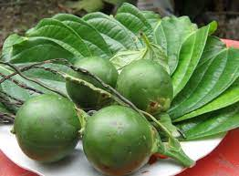
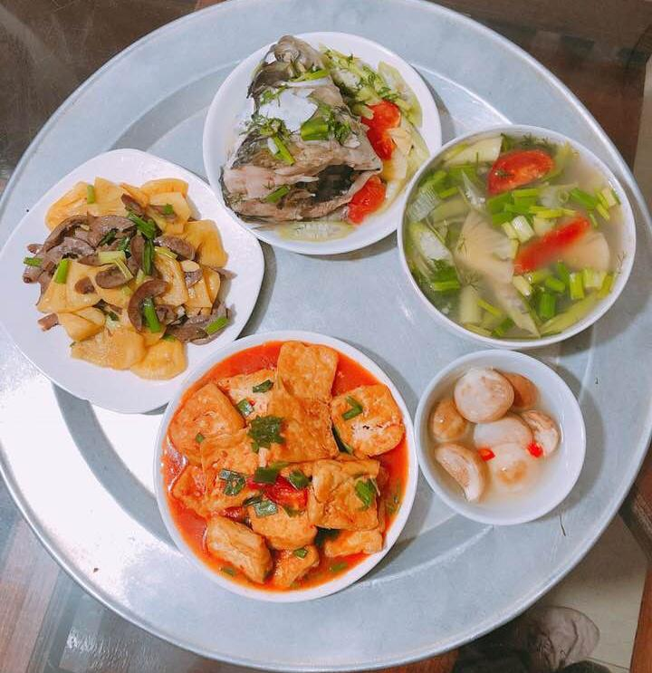
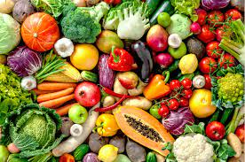
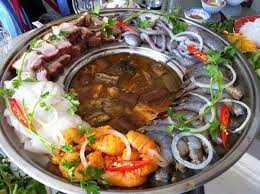

Ai?Cái gì?Ở đâu?...
Tình yêu và gia đình
Trầu cau
Tình yêu là gì? Là ta yêu một người mỗi ngày trong một năm. Mỗinăm trong một đời người...
Xây dự hạnh phúc gia đình qua những bữa cơm hàng ngày
Nói đến hạnh phúc gia đình chúng ta thường mô tả bằng những từthật đệp đẽ và được thể hiện qua những giá trị đạo đức rất đáng
trần trọng như tình yêu, lòng chung thủy, tình nghĩa vợ chồng, lòng
yêu thương, hy sinh cho con cái, sự quý trọng, hiếu đễ của con cháu với cha mẹ, ông bà...
Sức khỏe
10 lời khuyên trong dinh dưỡng
Cơ thể chugns ta cần nhiều chất dinh dưỡng từ nhiều nguồn lươngthực khác nhau. Vì vaayk chúng ta nên thay đổi các loại lương thực
khác nhau. Chúng ta không cần kiêng chỉ cả - quan trong là chú ý đến số lượng...
Làm sao để bỏ thuốc lá?
Sức khỏe của chính bạn. Không hú thuốc lá tức là giảm thiểu đángkể rủi ro mắc các loại beenh ung thư và sức khỏe sẽ tăng lên đáng
kể so với khi còn hút thuốc. Về đầu trang
Du lịch
Các tour mới nhất
- Côn Minh - Đại Lý - Lệ Giang
- Đến Macau xem casino
- Về Cà mau ăn tôm tít
Các điểm du lịch nổi tiếng trên thế giới
- Đảo Bali xinh đẹp - Indonexia
- Thành cổ Rome và thấp nghiêng Pisa
- Vạn Lý Trương Thành
Ẩm thực
- Các món ăn mới trong tuần
- Chuyên mục dạy nấu ăn
- Món ngon Hà Nội
- Các món ăn dân dã ở miền Tây 
Âm nhạc
Nhạc thiếu nhi
- Nắng sân trường
- Mẹ yêu không nào
- Ba bà đi bán lợn con
Dân ca
- Bèo dạt mây trôi
- Mười thương
- Lý cây bông